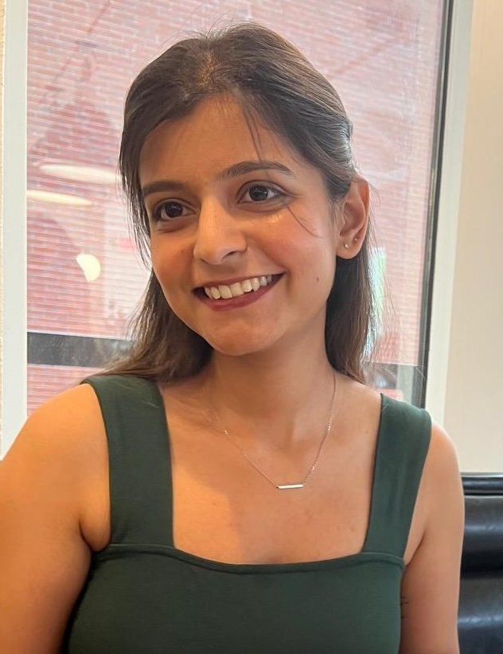

The Third of May, Two Thousand & Twenty-Six

"A soul full of grace, a heart full of light — the one who makes everything beautiful."
"A quiet strength, a gentle warmth — the one who makes every moment matter."
Every love story is beautiful, but ours is our favourite
Some stories begin with a glance, some with a word. Ours began with the kind of serendipity that only the universe could arrange.
What started as stolen moments and lingering conversations quickly became the foundation of something extraordinary.
Through every season, every challenge, and every joy; We discovered that home isn't a place, it's a person.
We’re saving this spot for the best photo of our lives.
You’ll be there.
And now, surrounded by the people we love most, we begin the most beautiful chapter of all — forever.
Request the honour of your presence
Calculating the distance love must travel…
With love, Palak & Ashish